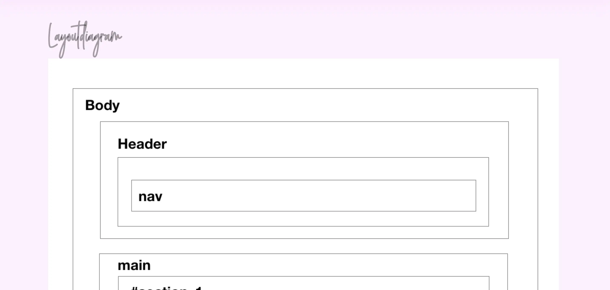
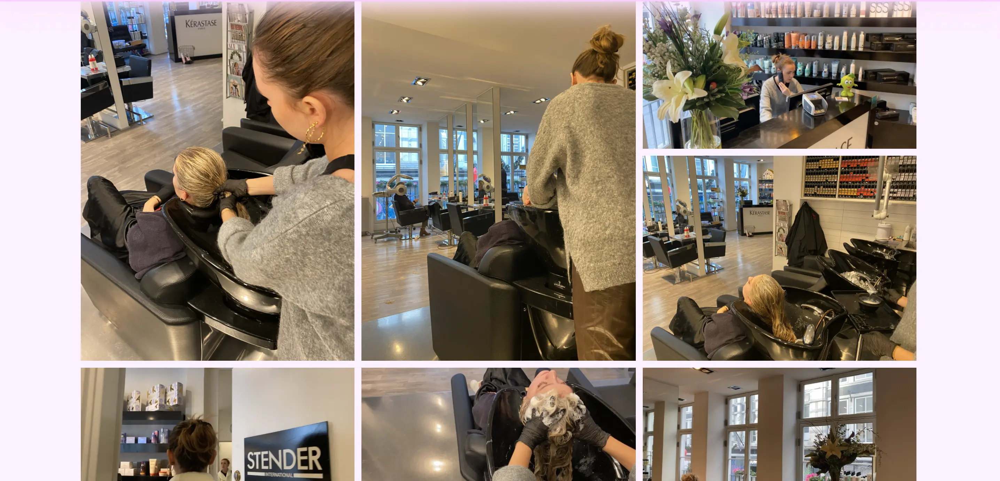
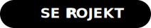
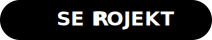

1. fase
PILOTPROJEKT
I første opgave/første fase skulle vi interviewe en person, der
berettede om en passion. Her optog vi B-rolls hvor
hovedpersonen foretog en handling eller noget af betydning for
historien. Jeg startede her med et establishing shot, filmede
forskellige framings og fandt titel. Jeg lærte også her at
gøre brug af motion graphics som intro eller outro
(credits/”rulle tekster” på filmen).
Efter produktionen af videoen, implementerede jeg den på et
site. Her indsatte jeg
portræt foto, højformat foto og bredformat foto. Herefter
lærte jeg at lægge videoen ind på sitet på 2 forskellige måder.
Youtubes embed-metode, hvor filens lægges op på Youtube og
med video-tagget i html, hvor filen skulle lægges op på eget
webhotel.
- Premiere Pro - HTML - CSS-
Se opgaver
Layoutdiagram
Foto
Videoer
Færdige produkt
 

2. fase
REDESIGN
Jeg var nu klædt på til redesign af en selvvalgt virksomheds
website. Redesignet mundede ud i et kodet website og
indeholdte indholdsproduktion i form af tekst, foto og video.
Vi afleverede også et processdokument, som dokumenterede
vores arbejdsproces. Vi valgte virksomheden ”vinhanen”.
Første punkt var at finde virksomheden koncept og
undersøge deres nuværende site ved hjælp af et
sitemap, nuværende brand, målgruppe,
brugerrejser/funktionaliteter, BERT og 5-sec test. Herfra begyndte idegenereringsfasen hvor vi lavede
wireframe på papir, nyt sitemap, prototype i XD, moodboard og
styletile.
Processen foregik under tre faser. Den første fase
”preproduktion” lavede vi
Synopsis - præmis og logline, Interviewguide, Storyboard og
produktionsplan. Dernæst kom selve ”Produktion” fasen, hvor vi
filmede og interviewede. Den sidste fase ”Postproduktion”,
indsatte vi
grafiske elementer, klippede, Color correction på filmen og
rettighedsfrit musik.
Den sidste del af opgaven gik ud på at kode vores
redesign i HTML, CSS og javascript. Med det færdige resultat
testede vi vores website med BERT og 5-sec test som indgik i
vores pitch.
Min rolle for dette forløb var først og frememst at
holde overblik, orden og struktur, det vil sige scrum-master og
git-hub master. Jeg stod derudover for interview og filmning samt
alt der havde med design og stil at gøre. Alt dette tegnede og
designede jeg i adobe XD og illustrator. Her lavede jeg også
styletile og mockup ud fra wireframe. Jeg kodede herfra forsiden i
html samt CSS og champangesite i CSS.
- Premiere pro - HTML - CSS - Adobe XD - Adobe illustrator -
Nuværende site

Bert-test
video
Færdige produkt
- HTML - CSS -